Return to Assignment 2 Overview
Starting with the low pass Gaussian blurring/smoothing filter, I can retain just the low frequencies of an image. By subtracting these low frequencies from the original image, I can get just the remaining high frequencies (sharp textures/edges/noise). I can then choose to perform unsharp masking by adding a scaled amount of those high frequencies to the original image, making the original image look sharper.
This is a breakdown of how I applied the unsharp mask filter:
To build the Gaussian filter, I made a 1D Gaussian with cv2.getGaussianKernel(ksize=9, sigma=1.0) and took the outer product with its transpose, gaussian_2d = gaussian_1d @ gaussian_1d.T, to get a 9×9 2D Gaussian.
I convolved the original images with the Gaussian filter to get the low frequencies only.
I subtracted the blurred image from the original image to get the high frequency image.
I made the unsharp mask filter by scaling the unit impulse by (1 + multiplier) and subtracting the scaled gaussian from it. unsharp_mask = (1 + multiplier) * impulse - multiplier * gaussian_2d, where impulse is a 9×9 array of zeros with a 1 in the centre (unit impulse). Sharpening the image then takes only one convolution.
I convolved each colour channel separately with signal.convolve(channel, unsharp_mask, mode='same'), stacked the channels together, and clipped the result to 0–255 to ensure all of the pixels were within the representable range.
This is the original image of the Taj:
In the blurred image, we lose all the fine detail on the Taj. You can no longer see much of the intricacies of the architecture. Similar with the plants/trees, they lose texture. In the high frequency image, we see all of the fine detail that we lost when blurring. You can now see the individual details on the Taj and more of the texture in the greenery. When we add a scaled amount of the high frequencies back to the original image, the details on the Taj are able to stand out more.
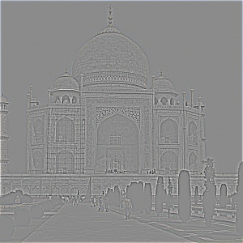
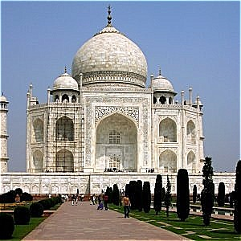
For my own image I used a photo of my cat, Merlin. His high-frequency image picks out the outline of his ears and head, the outline of his eyes, his whiskers and the texture of his fur. After sharpening, the whiskers and eyes are clearer and the fur has more visible texture.
This is the original image of Merlin:
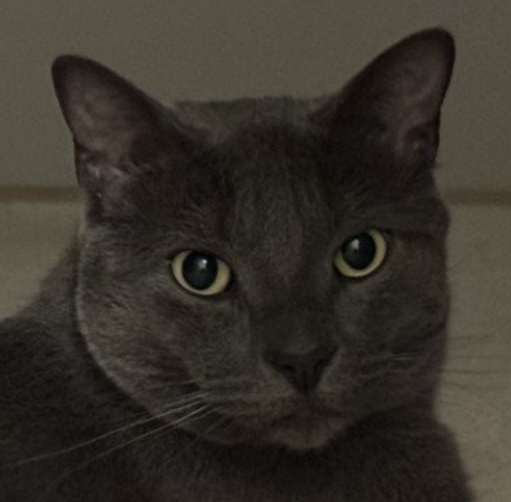
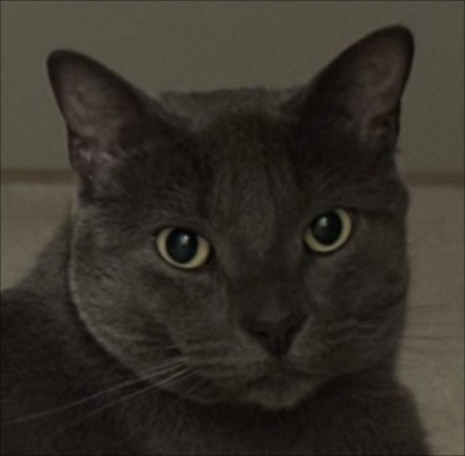
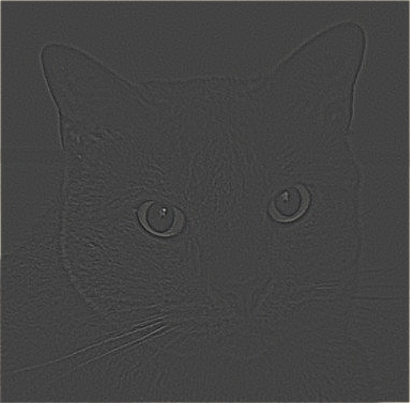
I made a multiplier that controls how much of the high-frequency image is added back to the original image and tested 0.5, 1, 2, 4, 6 and 8 on both images.

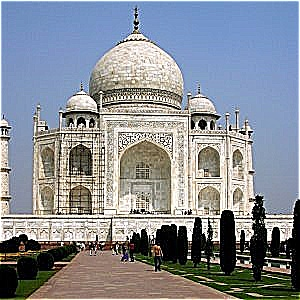
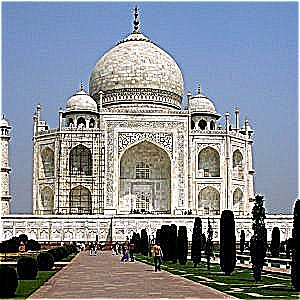
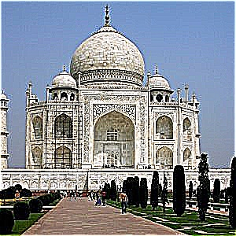

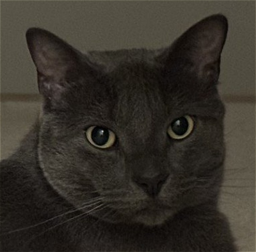
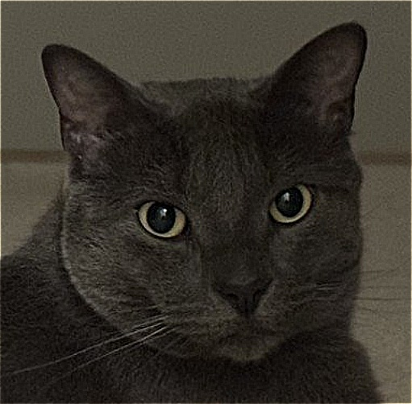
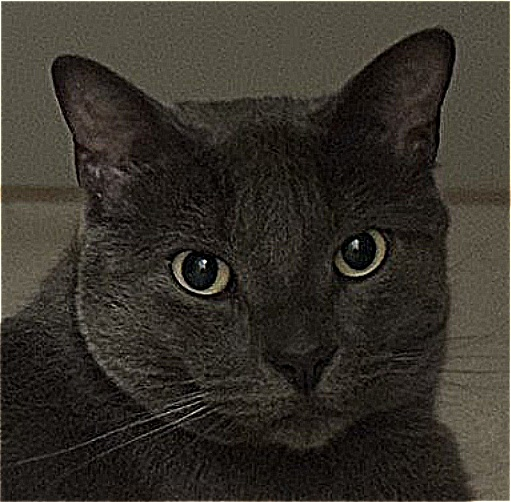
With the multiplier set at 0.5 and 1, there's only a slight improvement to the sharpness of the images. At a multiplier of 2, the images do look visibly sharper, but the features still blend nicely and look balanced. As the multiplier grows from 4, to 6, to 8, the images started to look more and more unatural with the edges being very strong and harsh. The images looked pretty grainy at the higher multipliers since the unsharp mask filter also amplifies noise and there was a halo effect that appeared, for example, the edges of Merlin's face started to have a brighter, glowing white appearance.
I blurred the original Merlin photo with the Gaussian filter and then sharpened the blurred photo with a multiplier of 2 just to see how well it would be able to recover the high frequencies that were lost in the blur.
The re-sharpened image is visibly crisper than the blurred one, and the outlines of Merlin’s head, ears and eyes have more contrast again. However, the re-sharpened image doesn't match the original image. The very fine details like Merlin's strands of fur and his super thin whiskers aren't as present in the re-sharpened image and his fur looks smoother than in the original photo since blurring removed the high frequencies to an extent and the resharpening is only able to amplify the frequencies that remained. I learned through this that re-sharpening a blurry image can't restore any lost information.